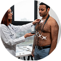

Prevenção Masculina

A partir dos 15 anos
- Autoexame testicular (mensal, após o banho)
- Atenção a alterações: tamanho, dor, nódulos
- Vacinação em dia (Hepatite B, Difteria, HPV, influenza, covid)

A partir dos 20 anos
- Exames de sangue e urina
- Avaliação odontológica e oftalmológica
- Avaliações cardiológicas e metabólicas
A partir dos 30 anos
- Check-up anual com clínico geral
- Exames de sangue mais completos (colesterol, triglicérides, glicemia)
- Aferição da pressão arterial
- Avaliação dermatológica
- Avaliação cardiovascular inicial

A partir dos 40 anos
- Exames cardiovasculares
- Exames de sangue e urina (anuais)
- Se houver histórico familiar de câncer de cólon ou próstata, considere rastreio antes

A partir dos 50 anos
- Colonoscopia (a cada 5 anos)
- Exame de próstata (PSA + Toque retal)
- Continuidade dos exames laboratoriais e cardiovasculares